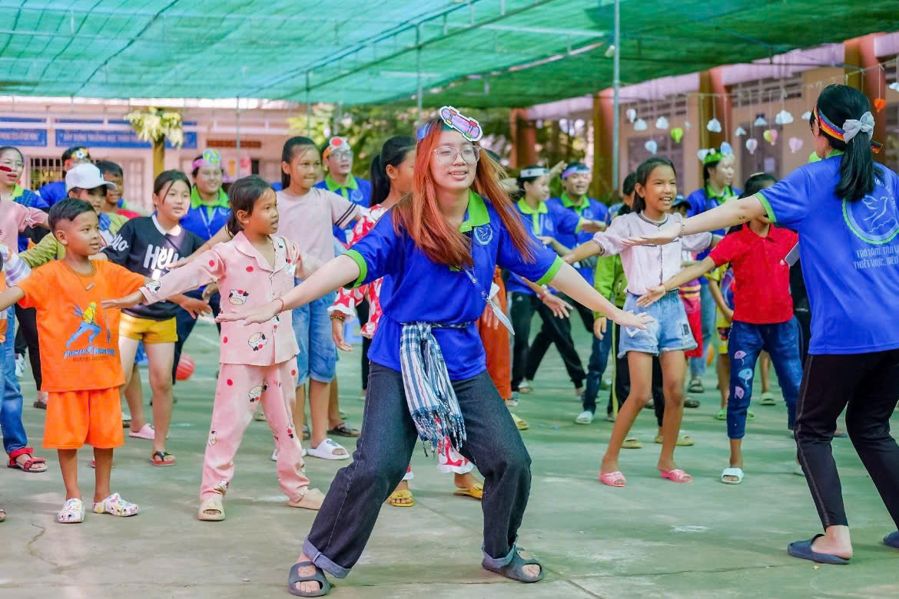

Hình 5.1: Tình nguyện viên thực hiện công đoạn đặt cây con và tưới nước cố định tại khuôn viên trường tiểu học.
1. Mục Tiêu Hoạt Động
Tăng diện tích cây xanh tại khu dân cư, trường học hoặc công viên công cộng ở địa phương.
Góp phần cải thiện cảnh quan, tạo bóng mát và nâng cao chất lượng môi trường không khí.
Nâng cao ý thức bảo vệ thiên nhiên, tinh thần gắn kết của sinh viên tình nguyện và người dân địa phương.
2. Địa Điểm Thực Hiện
Công viên, trường học, khuôn viên nhà văn hóa ấp hoặc các khu đất công cộng, tuyến đường nông thôn được chính quyền địa phương cấp phép trồng cây.
3. Nội Dung & Các Bước Thực Hiện
Khảo sát thực địa: Khảo sát địa điểm, đo đạc khoảng cách và xác định chính xác khu vực trồng cây phù hợp.
Phân công nhiệm vụ: Phân công tình nguyện viên theo từng tổ/nhóm nhỏ (đào hố, vận chuyển cây giống, lấp đất, tưới nước).
Chuẩn bị đất & đào hố: Cuốc xới đất, đào hố theo quy cách chuẩn kỹ thuật và đặt cây giống cẩn thận xuống hố.
Trồng & cố định cây: Lấp đất mùn, nén nhẹ quanh gốc cây, cắm cọc chống đỡ cố định và tưới đẫm nước cho cây bén rễ.
Thu dọn & vệ sinh: Thu gom toàn bộ bao bì, bầu ươm, dọn dẹp vệ sinh sạch sẽ khu vực sau khi hoàn thành.
Bàn giao & chăm sóc: Lập kế hoạch bàn giao và phối hợp cùng đoàn thể địa phương chăm sóc, tưới cây sau chiến dịch.
4. Thời Gian Dự Kiến
Khung giờ: 07:00 – 10:30 (Buổi sáng)
Nên tổ chức vào buổi sáng sớm để cây mới trồng không bị héo dưới nắng gắt và bảo đảm sức khỏe dẻo dai cho tình nguyện viên. Thời gian cụ thể có thể điều chỉnh linh hoạt theo diễn biến thời tiết và kế hoạch của Ban Tổ chức.
5. Thành Phần Tham Gia
Sinh viên tình nguyện thuộc Đội hình Môi trường xanh (lực lượng nòng cốt).
Đoàn viên thanh niên, hội phụ nữ và bà con nhân dân tại địa phương.
Trưởng nhóm phụ trách phân công điều phối, giám sát tiến độ và bảo đảm an toàn lao động.
6. Công Tác Chuẩn Bị Cơ Sở Vật Chất
Cây giống: Cây bàng Đài Loan, hoa hoàng yến hoặc cây dầu/sao đen phù hợp thổ nhưỡng địa phương.
Dụng cụ lao động: Cuốc, xẻng, cào đất, bình tưới nước, xô múc nước và găng tay bảo hộ lao động.
Trang bị cá nhân: Nón tai bèo, bình nước uống cá nhân, khăn lau mồ hôi và trang phục tình nguyện gọn gàng.
Hậu cần y tế: Túi đựng rác thải, cọc tre cố định cây, dây buộc và bộ dụng cụ sơ cứu cơ bản (băng gạc, sát trùng).
7. Kết Quả Dự Kiến Đạt Được (Giả Định)
Trồng được 100% số lượng cây con theo đúng chỉ tiêu đề ra (dự kiến từ 300 - 500 cây/đợt).
Cải thiện rõ nét cảnh quan môi trường tại địa bàn thực hiện, tạo bóng mát cho con đường đến trường của trẻ em.
Hình thành ý thức bảo vệ, tưới nước và chăm sóc cây xanh lâu dài trong cộng đồng dân cư sở tại.
Hoạt Động 2: Sinh Hoạt Thiếu Nhi
Đội hình Vì trẻ em phụ trách

Hình 5.2: Buổi sinh hoạt kỹ năng và tô màu tranh vẽ bảo vệ môi trường cùng các em nhỏ tại nhà văn hóa xã.
1. Mục Tiêu Hoạt Động
Tạo sân chơi lành mạnh, an toàn, ngập tràn niềm vui cho trẻ em nông thôn trong những ngày hè.
Khuyến khích các em tự tin giao tiếp, học cách hợp tác đồng đội và phát triển năng khiếu nghệ thuật, tư duy sáng tạo.
Mang đến sự quan tâm, tình thương yêu và nguồn động viên tinh thần to lớn của các anh chị sinh viên dành cho thiếu nhi khó khăn.
2. Đối Tượng Tham Gia
Trẻ em sinh sống tại địa phương, ưu tiên các em có hoàn cảnh gia đình khó khăn, con em hộ nghèo. Độ tuổi dự kiến từ 6 – 12 tuổi. Số lượng dao động từ 40 – 80 em tùy thuộc diện tích địa điểm và nhân lực tổ chức của ban điều phối.
3. Nội Dung Chi Tiết Buổi Sinh Hoạt
Đón trẻ & Ổn định: Đón tiếp các em nhỏ, điểm danh, chia nhóm theo màu sắc và ổn định trật tự đội hình.
Khởi động & Trò chơi làm quen: Tổ chức các trò chơi dân gian, hát múa tập thể để phá tan sự rụt rè ban đầu.
Góc sáng tạo nghệ thuật: Phát giấy vẽ, bút màu, tổ chức thi vẽ tranh chủ đề “Ước mơ của em” hoặc đọc truyện thiếu nhi.
Lồng ghép kỹ năng sống: Tuyên truyền kiến thức phòng chống đuối nước, giữ gìn vệ sinh cá nhân và phân loại rác thải.
Tặng quà khuyến học: Trao tặng các phần quà nhỏ như tập vở, bút viết, sữa và bánh ngọt để khích lệ tinh thần các em.
Tổng kết & Lưu niệm: Đánh giá tuyên dương các nhóm chơi tốt, chụp ảnh lưu niệm cùng phụ huynh và chính quyền địa phương (khi được người giám hộ đồng ý).
4. Phân Công Nhiệm Vụ Tình Nguyện Viên Trong Đội
Trưởng Nhóm Điều Phối
Chịu trách nhiệm tổng thể chương trình, điều tiết tiến độ thời gian theo kịch bản, bao quát an toàn và giải quyết các tình huống phát sinh.
Nhóm Nội Dung & Quản Trò
Soạn thảo kịch bản trò chơi, câu đố vui, điều hành sinh hoạt tập thể, hướng dẫn thiếu nhi vẽ tranh và kể chuyện đạo đức.
Nhóm Hậu Cần
Sắp xếp bàn ghế, chuẩn bị chu đáo giấy vẽ, sáp màu, quà bánh, nước uống và các thiết bị âm thanh loa đài.
Nhóm Hỗ Trợ & An Toàn
Trực tiếp kèm cặp từng nhóm nhỏ, chăm sóc các bé nhỏ tuổi, theo dõi sức khỏe và giữ liên lạc chặt chẽ với phụ huynh các em.
5. Công Tác Chuẩn Bị Trang Thiết Bị
Học phẩm & Trò chơi: Giấy A4, bút màu, truyện tranh thiếu nhi, bóng bay, dây thừng kéo co, bảng tên nhóm.
Âm thanh & Kỹ thuật: Loa di động, micro không dây, danh sách bài hát thiếu nhi sôi động.
Y tế & Nước uống: Bình nước uống tiệt trùng, ly giấy, khăn ướt, bộ sơ cứu y tế (urgo, cồn đỏ, dầu gió).
Danh sách trẻ em: Danh sách tiếp nhận có số điện thoại người giám hộ theo đúng quy trình bảo vệ trẻ em của BTC.
6. Kết Quả Dự Kiến Đạt Được (Giả Định)
Tổ chức thành công trọn vẹn buổi sinh hoạt, mang lại niềm vui rạng rỡ và sự tự tin cho toàn thể trẻ em tham dự.
Các em tiếp thu được kỹ năng phòng chống đuối nước và thói quen giữ gìn vệ sinh môi trường sống.
Sinh viên rèn luyện thuần thục kỹ năng giao tiếp sư phạm, làm việc nhóm và khả năng làm chủ sân khấu trước đám đông.
Xây dựng hình ảnh đẹp, thân thiện, đáng tin cậy của màu áo xanh tình nguyện trong lòng bà con nhân dân.